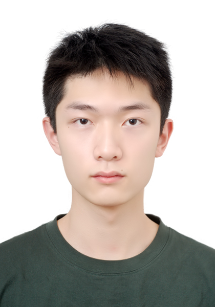

CV | Scholar | Github | LinkedIn

I'm Yuheng Wu, a graduate student at Stanford University, advised by Prof. Thierry Tambe. I earned my M.S. in Electrical Engineering from the same institution, and my B.E. in Electronic Information Engineering from Wuhan University.
My research centers on large language models (LLMs), with a focus on reasoning, test-time methods, verification, formal methods, and hardware-software co-design.
Please see my Google Scholar for publications.
Please see this page for some of the things I enjoy outside of research.
Yuheng Wu